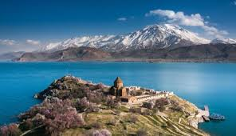

Van Gölü
Çok sayıda koyu bulunan Van Gölü'nün yüzölçümü 3.713 km2'dir. Van Gölü hem tatlı su hem de deniz ekosistemlerinden farklı bir sucul ekosistemdir. Suları tuzlu ve sodalıdır. Göl suyu tuzluluk oranı %o19, pH'sı ise 9.8 dir. Bu yüzden Van Gölü yüksek rakıma ve sert kışlara rağmen donmaz. Göl su seviyesi iklime bağlı olarak yükselip, düşmektedir. Ancak ortalama olarak denizden yüksekliği 1646 metredir. Gölün ortalama derinliği 171 m, en derin yeri ise, 451 metredir. Yeni yapılan çalışmalar ile gölün yaşının 600.000 yıl olduğu belirlenmiştir. Gölün doğu bölümünde dört ada vardır. Bunlar; Akdamar, Çarpanak, Adır ve Kuş adalarıdır. Adalar tarihi ve turistik özelliğe sahiptir ve 1990 yılında Arkeolojik Sit Alanı ilan edilmişlerdir.

Van Gölü dünyanın en büyük sodalı gölüdür ayrıca Türkiye'de bulunan en büyük göldür. Gölün tuzlu-sodalı suları, biyolojik çeşitliliği sınırlamaktadır. Gölde bilinen 103 tür fitoplankton, 36 tür zooplankton ve iki tür balık yaşamaktadır. Bunlar; inci kefalı (Chalcalburnus tarichi) ve 2018 yılında İl Jandarma Komutanlığı Su Altı Timinin, Van Gölü'ndeki dalış eğitimi sırasında 13 metre yükseklikteki bir mikrobiyalitin içerisinde yaşadığını tespit ettiği, siyah benekli sarı bir balıktır. Bu yeni balık türü ile ilgili araştırmalar devam etmektedir. 2015 yılında yapılan araştırmalara göre gölde piyasa değeri 7.5 milyar dolar olan 50 tonluk Uranyum vardır. Göl etrafı karadan 430 km.'dir ve bunun 245 km si Bitlis ili sınırları içindedir. Yöre halkına göre gölde bir canavar yaşamaktadır. Söylentiyi çıkaranların amaçlarının bölgeye turist çekmek olduğu söylense de, söylentileri araştırmak amacıyla bölgede pek çok bilimsel araştırma ekibi çalışmalar yapmıştır. İstanbul-Tahran demiryolu hatlarını da bağlamaktadır. Türkiye ve İran'a bağlanan demir yolu 1970'lerde yapılmıştır.
Oluşumu
Van Gölü Doğu Toros ve Aladağların arasında kalan tektonik oluşumun batı kısmında bulunmaktadır. Gölün batısında ve kuzeybatısında birkaç sönmüş volkan vardır. Süphan Dağı ve Nemrut Dağı bu sönmüş volkanların birkaçıdır. Yaklaşık 200 bin yıl önce, Buzul Çağı'nın ortalarında, Nemrut Dağından akan lavlar uzunluğu 60 km'yi aşan bir akım oluşturmuş. Bu akım Van Çukuru ile Muş Çukuru arasındaki su akımını engelleyince göl oluşmuştur. Günümüzdeki araştırmalarda Doğu Toros Dağlarının erozyona uğraması sonucu Van Gölü'ndeki suların Dicle’ye dökülüp, gölün küçüleceği ya da yok olacağı düşünülmektedir.
Tarihçe
Eski Yunan coğrafyacıları tarafından Thospitis Lacus ya da Arsissa Lacus olarak anılan Van Gölü'nün modern zamanlardaki ismi, sınırlarına dahil olduğu Van ilinden gelmektedir. Urartu Krallığının başkenti, Milattan önce 10. ve 8. yüzyıllar arasında, gölün doğu kıyılarında kurulmuştur. Van Gölü sahilleri boyunca ve pek çok adalarında Ermeni kilise ve manastır kalıntıları bulunabilir. En iyi korunanı onuncu yüzyıldaki Kutsal Haç Kilisesi'dir. Akdamar Adası'ında yer alır. Kral Gagik Artzruni tarafından 915 ve 921 yılları arasında inşa edilmiştir. Dış duvarlardaki rölyefler kutsal kitaba ait Âdem ve Havva, Jonah and the whale (Yunus ve Balina), Davud ve Goliath (Golyat) gibi hikâyeler sunar. Diğer önemli tarihsel anıt gölün doğu kıyısındaki Van Kalesidir. Modern Van şehri bu kalenin doğusunda yer alır. Yüzölçümü3.713 km2’dir. Denizden yüksekliği 1.646m derinliği ise 457m‘yi aşmaktadır. Gölün doğusunda Akdamar, Çarpanak, Adır ve Kuş adaları bulunmaktadır. Bu adalar turistlik özelliğe sahiptir. Sit alanı olarak ilan edilmiştir.
.jpeg)
Van Gölü Canavarı Hikayesi
Van Gölü Canavarı, Van Gölü'nde yaşadığı ileri sürülen efsanevi bir yaratıktır. 1993 yılına dek kaynaklarda adından hiç söz edilmeyen yaratığı, bugüne dek gördüğünü iddia eden çok sayıda kişi var. Ama yapılan araştırmalar göldeki ilk canavar vakasının 1889 yılında yaşandığını aktarıyor. Dönemin İstanbul'da yayın yapan Saadet gazetesinin, 28 Şaban 1306 (29 Nisan 1889) tarihli 1323 nolu nüshasında, canavarın Van Gölünde abdest almak isteyen bir kişiyi kapıp göle sürüklediği haberi yer alıyor. Varlığı gördüklerini söyleyen kişilerin belirttiklerine göre canavar 15 metre uzunluğunda, oldukça koyu bir renge sahip, sırtında sivri çıkıntıları olan, Plesiosaurus ya da Ichthyosaurus benzeri bir varlıktır. Zamanla bu varlığı gördüğünü iddia edenlerin sayısı artınca, olay basına da yansıdı ve bunun üzerine resmî kurumlar tarafından bölgeye bir bilimsel araştırma ekibi gönderildi. Ancak, yapılan araştırmalar sonucunda gölde olağan dışı herhangi bir varlığın olduğuna ilişkin hiçbir iz bulunamadı.
Bölgenin Jeomorfolojisi ve Stratigrafik Yapısı
Coğrafya Kapalı bir havza olan Van Havzası, eski Muş-Van çukurluğunun bir parçasıdır. Kuzey ve güneyinden faylarla sınırlanmış bir çöküntü alanı olan eski Muş-Van çukurluğu, Miosen sonlarında başlayıp Pleistosen’de devam eden volkanik faaliyet sonucunda meydana gelen Nemrut Volkanının oluşturduğu setle iki kısma ayrılmıştır (Gürbüz 1994:16, Avcı 2015:21-23). Nemrut Dağı’nın doğusunda kalan ve eskiden Fırat akarsu sistemine bağlı olan akarsuların dışa akışı kesilmiştir. Suların Nemrut Dağı’nın oluşturduğu setin arkasında birikmesiyle Van Gölü ve dolayısıyla Van Kapalı Havzası meydana gelmiştir (Saraçoğlu 1989: 435, Akt: Avcı 2015:21-23). Van Gölü Havzası; güneyden Bitlis Masifi’nin yüksek dağları (İhtiyar Şahap dağları) tarafından çevrelenir. Batıdan Nemrut ve Süphan volkan sistemlerinden kuzeyde yer alan Taşlıçay (Pani) Platosu’nun güney kesimlerine doğru ilerleyen hattın Yukarı Murat Havzası’nın güneyi ile sınırlayabileceğimiz Havza, kuzeyden Meydan Dağı, Bozdağ, Muratbaşı (Hüdavendigar) Dağları, Aladağ ve Tendürek dağlarıyla çevrelenir. Havza, doğuda Van Doğusu Dağları’nın batısında kalan alanları da içine alarak aslında Van Gölü’nün ekolojik ve iklimsel etkilerinin görüldüğü yerler olarak değerlendirilebilir.
İnceleme alanı genelinde, Paleozoik’ten günümüze kadar olan zaman aralığını temsil eden metamorfik, mağmatik ve sedimanter kayaç gruplarına ait kayaçlar yüzeylenmektedir. Bu çalma kapsamında inceleme alanının jeolojik yapısı, inceleme alanının büyüklüğü ile yüzeylenen birimlerin yaşları ve kökenleri dikkate alınarak, jeolojik birimler sekiz birim altında incelenmiştir. İnceleme alanının temelinde, Paleozoik - Mezozoik yaşlı Bitlis Masifine ait gnays, Şist, kuvarsit ve mermerler yüzeylenmektedir. Bu birimleri; Üst Kratese yaşlı Ofiyolitik Kayaçlar, Üst Kratese - Paleosen ve Alt - Orta Eosen yaşlı Volkanik Kayaçlar, Eosen - Miyosen yaşlı kırıntılı ve karbonatlı kayaçlar, Pliyosen - Kuvaterner yaşlı volkanik kayaçlar ve Pliyosen - Kuvaterner yaşlı sedimanter örtü kayaçlar izlemektedir
Alüvyal Ovalar
Van Gölü kıyısında yer alan alüvyal ovaların önemlileri, Ilıca (Zilan) Çayı ve kollarının taşıdığı malzeme ile oluşan Erciş ovası, Bendimahi Çayı boyunca uzanan Muradiye ovası, Değirmendere (Akköprü Çayı), Doni (Gölardı), Zemobat gibi küçük akarsu ve mevsimlik derelerin oluşturduğu nispeten büyük olan Van ovası, Adilcevaz’ın kuzey doğusunda bulunan Arın ovası ve araştırma sahamızın da bir kısmının içinde yer aldığı gölün güney doğu kısmında yer alan 45 km uzunluğunda, 7 km kadar genişliğinde ve 135 km2'lik bir alana sahip olan Gevaş-Gürpınar ovası yer almaktadır.
Van Gölü Havzası Drenaj Alanı
Van Gölü kapalı havzasının göl alanlar dâhil, yüzeysel drenaj alan 15495 km2’dir. Van Gölü’nün yüzey alan (serbest su yüzeyi) 3558 km2 ile 3626 km2 arasında değişmekte olup, ortalama gölalan ise 3580 km2 olarak hesaplanmıştır. Van Gölü su seviyesi ise 1646 metre ile 1650 metre arasında değişmekte olup, uzun yıllar ortalama su seviyesi ise 1648 metredir. İnceleme alanı Van ve Bitlis illeri idari sınırlar içinde yer almaktadır. Dünya’nın en büyük sodalı gölü olan Van Gölü yer almaktadır. Van Gölü gölalan dâhil, kapalı havzanın yüzeysel drenaj alanı 15495 km2 olup, Van Gölü kapalı havzasının çevresi ise 1233 km olarak hesaplanmıştır. 16096 km2 genişliğindeki Havza’nın tabanına Van Gölü yerleşmiştir. % 2,6 tuzluluk oranıyla bir soda gölü olan Van Gölü 3626 km2 yüzey alanı, 607 km3 hacmi, 12470 km2 drenaj alanı ve maksimum 451 metre derinliği ile Türkiye’nin kara içerisindeki en büyük su kütlesidir. Su yüzeyinin denizden yüksekliği son yıllarda 1655 metreyi bulmuştur.
Van Gölü Kuvaterner devri boyunca süren iklim değişimlerinde fazlaca etkilenmiş bir kapalı havza gölüdür. Göle dökülen Engil Çayı'nın yaptığı deltalar farklı yüksekliklerde yer alır. Göl yüzeyinin daha yüksek olduğu iki dönemde oluşan deltalardan birisi 1695–1710 m, ikincisi 1670–1690 m seviyelerindedir. Engil Çayı'nın günümüzde oluşturduğu aktüel delta ağzı da yıllara göre değişimler göstermektedir.
Engil Deltasının batı ucunda yer alan Dilkaya Höyüğü seviye değişimlerinden fazlaca etkilenmiştir. Gölün yükseldiği dönemlerde höyüğün yarısı yok olmuş, batı kısmı faleze dönmüştür.
Yağışların göle ulaşması birkaç yıl alabilmektedir. Yüksek ve karasal iklime sahip havzada yağışlar kar şeklindedir. Karların erimesi, yer altına sızması ve bu yoldan göle ulaşması birkaç yıl gecikmektedir. Göl yüzeyinin en fazla yüksekliğe eriştiği 1996 yılı yağış az iken, en fazla yağış üç yıl önce 1993'te düşmüştür. Yani 1993'te düşen yağış göle ancak üç yıl sonra 1996'da ulaşmıştır. 1992-96 yılları arasında gölde afet boyutunda yükselme yaşanmıştır. Göl çevresindeki yollar, evler ve tarım alanları zarar görmüştür. Göl en düşük seviyeye 1963'te (1646,6 m), en yüksek seviyeye 1996'da (1650,55 m) ulaşmıştır. Maksimum ve minumum seviye farkı 3,36 m'dir.